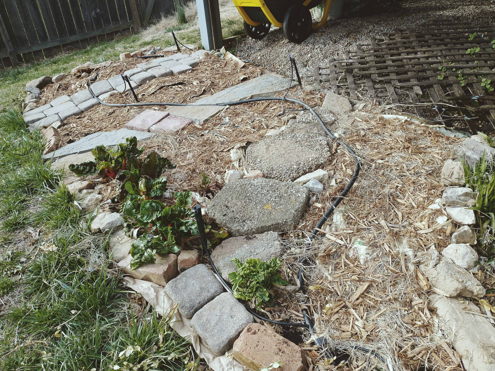
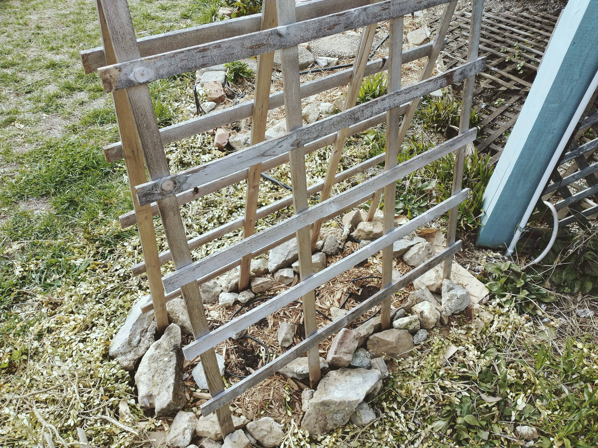
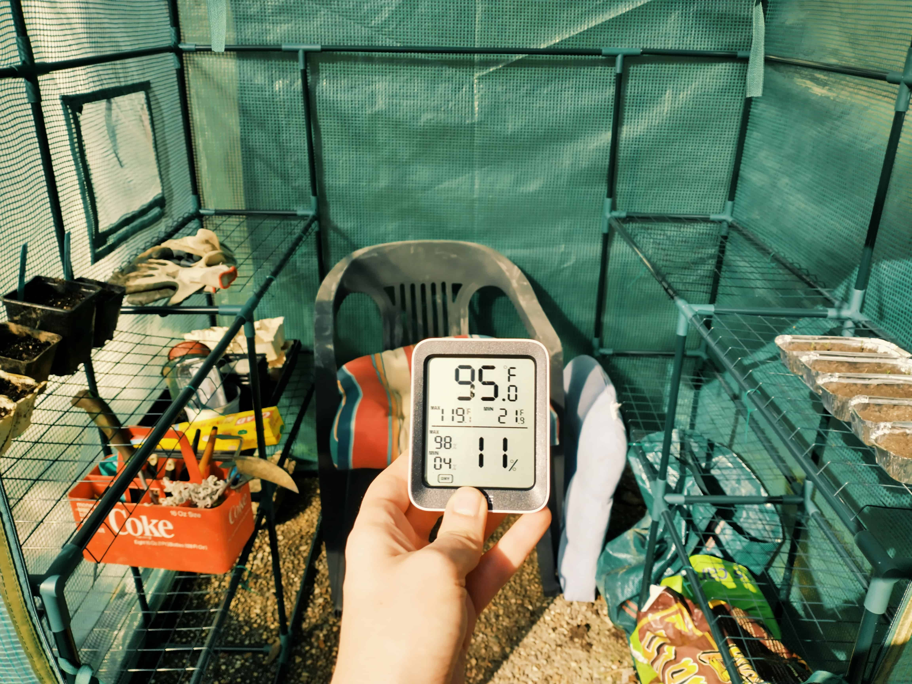

Literal spring awakening (not a reference to the Duncan Sheik musical, even though my dog, also named Duncan, makes an apperance)
March 24, 2021
This past weekend was absolutely gorgeous—sunny and 60s with no humidity to speak of—and I’m really pleased with all the garden prep I was able to get done.
First order of business, I redesigned my my south-facing bed. I read a great tip in a permaculture book about how foundational foot paths are to in-ground gardening. The harder it is for you to access your garden, the less likely you are to maintain it. (I also learned this lesson in the school of hard knocks last year, and it’s how my bountiful squash harvest became bug food.)
So, voila: some extremely DIY paths slapped together with landscaping rocks I had lying around.
And as you can see, my Swiss chard—which I planted in November—is absolutely indestructible (at least here in zone 6B). We’ve had a much harsher-than-normal winter here that killed my car but couldn’t take out this totally unprotected Swiss chard. I seriously cannot overstate how little I cared for these things over winter, and yet they persisted. Fuckin’ plants, man. Love ‘em.
I also went ahead and direct-sowed some Sweet Alyssum, which I had a lot of early success with last year.
Speaking of direct sowing, it was past time for me to plant my peas. I went into the weekend not know where I wanted to put them, then I had a brainwave and built this whole bed from scratch. My inhereited collection of landscaping rocks are coming in handy yet again.
Also! This is my first year with a greenhouse. I kinda can’t believe how inexpensive some of them are—including this one, which my mom got me for Christmas. I think it was $90-ish, and it’s been worth it for the storage space alone. And yes, things are startin’ to heat up in there.

Shoutout to on-site supervisor Duncan, of course, who runs a tight ship.